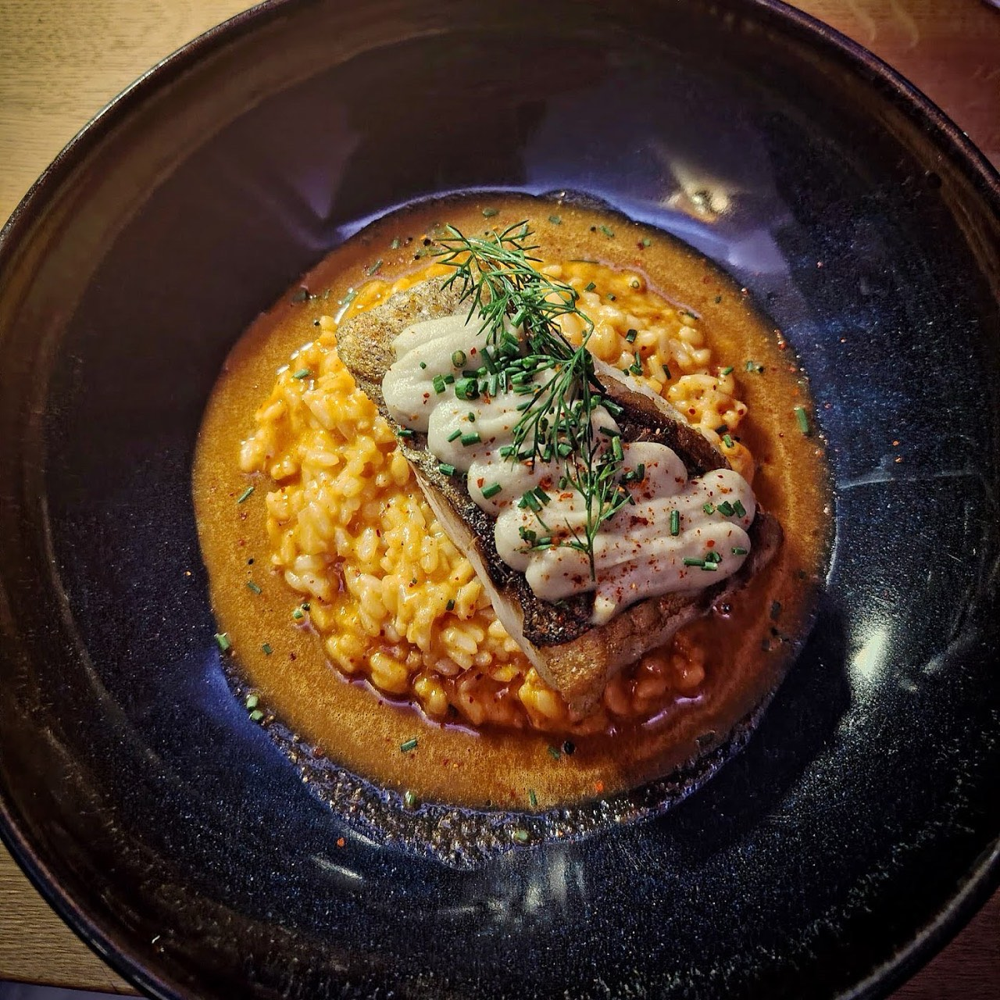
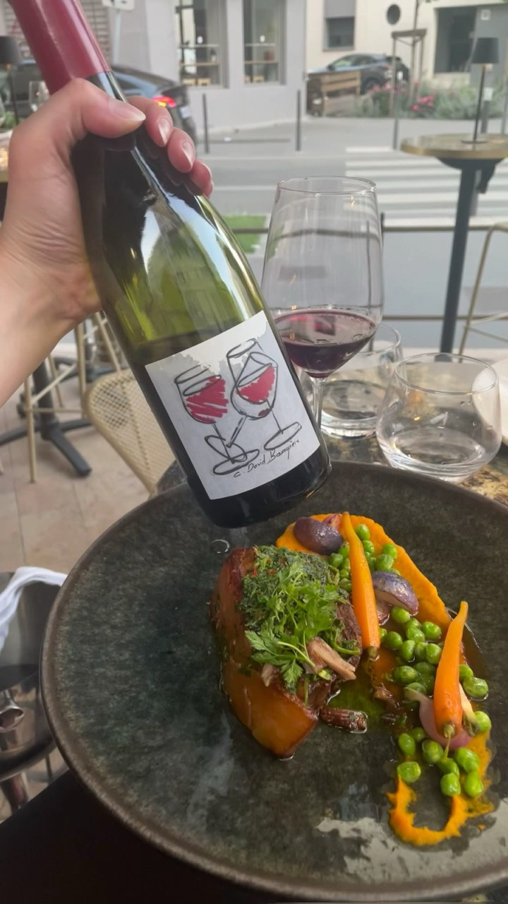
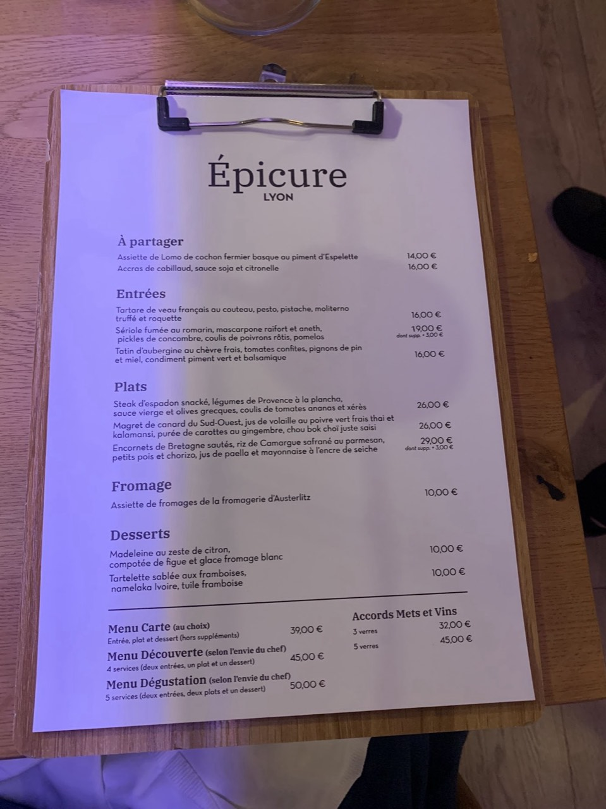
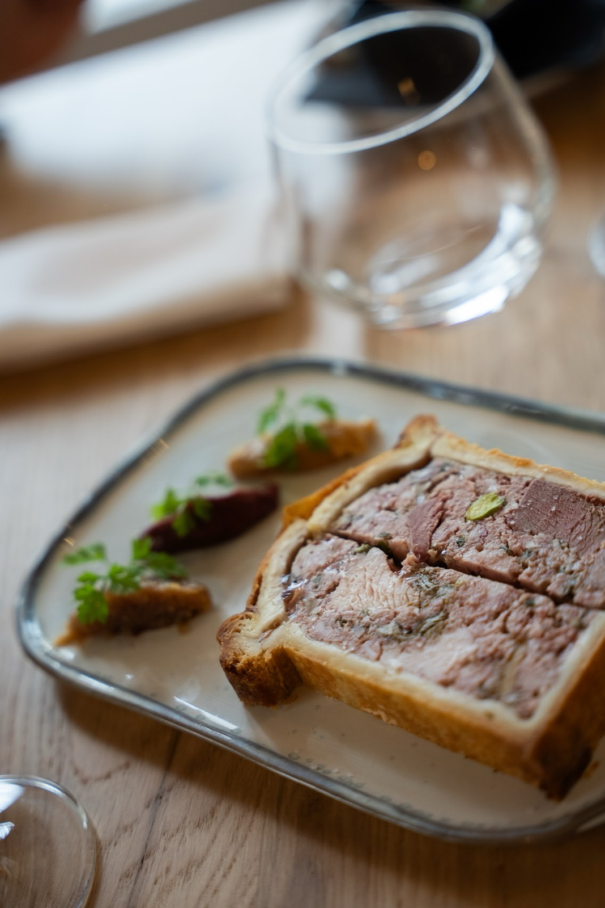
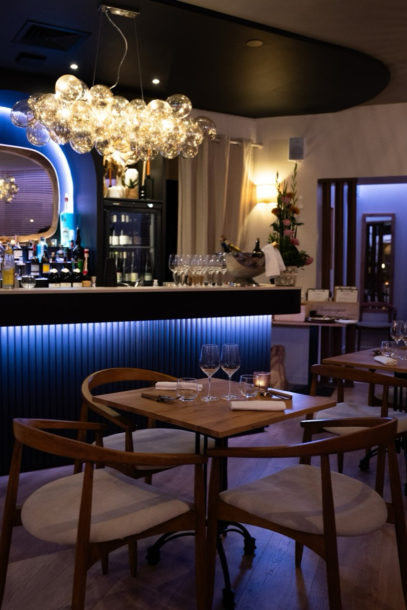
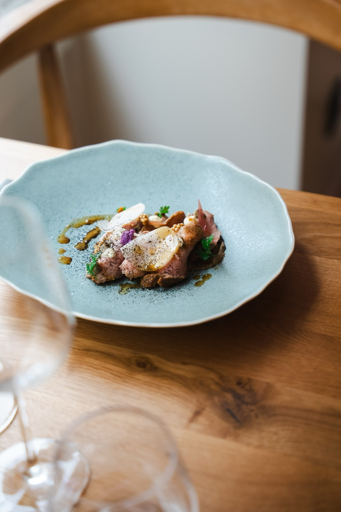
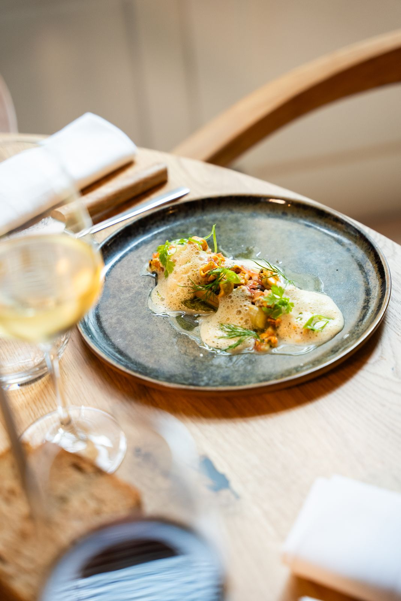
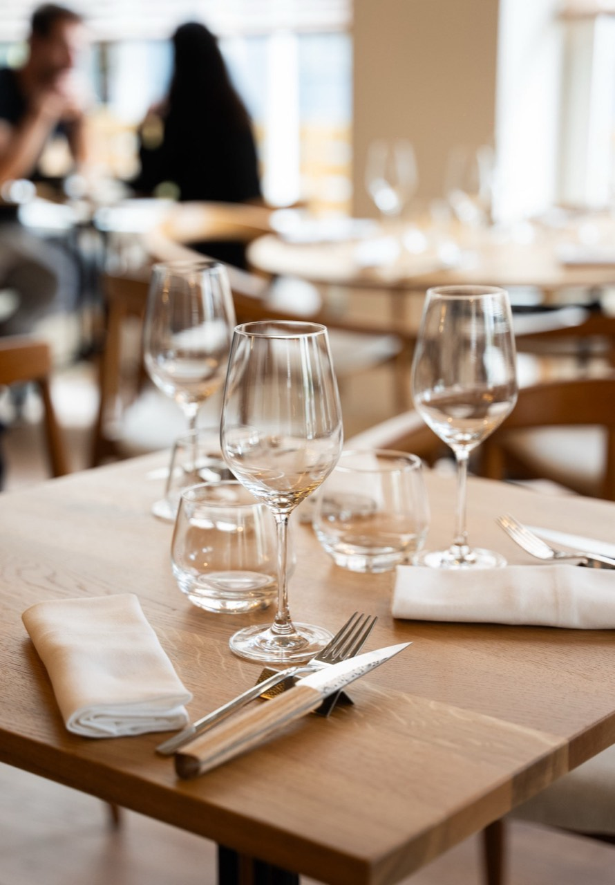

Cuisine française moderne · Lyon 6e
Épicure
Épicure Lyon, restaurant bistronomique, propose une cuisine raffinée à base de produits frais et locaux, issus directement de producteurs de qualité. Un cadre chaleureux et un service convivial pour une expérience culinaire authentique.
Notre vision chez Épicure Lyon est d’offrir une expérience bistronomique alliant authenticité et convivialité. Nous privilégions des produits frais et locaux, choisis avec soin, pour créer des plats raffinés dans une ambiance décontractée, propice au partage et à la découverte.
- 4,9 ★ sur Google (594 avis)

En images







Nous trouver
95 Rue Masséna, 69006 Lyon
| Lundi | Fermé |
| Mardi | 12:00–14:00 · 19:30–21:30 |
| Jeudi | 12:00–14:00 · 19:30–21:30 |
| Vendredi | 12:00–14:00 · 19:30–21:30 |
| Samedi | 12:00–13:30 · 19:30–21:30 |
| Dimanche | Fermé |